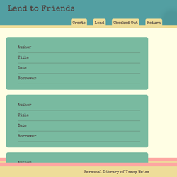

Lend to Friends
Simple app that allow users to create and save a library of their books, and keep track of which friends the user has lent thier books out to.
Tracy is a Full-Stack Developer currently based in San Francisco, Ca. She received her Bachelors of Fine Arts in Photography from Cleveland Institute of Art, Oh. She has since worked in photography, prepress and print and had her own sewing business, Racy Tracy designs. After finding the need for a website for her business, Tracy decided to try her hand at making her own website.
Eventually her focus turned from sewing to development, a new form of creating useful things for other people. Learning new languages and frameworks rapidly, Tracy finds herself at home in modern software development and web design.
Simple app that allow users to create and save a library of their books, and keep track of which friends the user has lent thier books out to.
App that allows a user to highlight and save a quote to their Quote8 library from a web page. User can save, share and tag thier quotes.
Website for Racy Tracy designs, featuring Tracy's sewing and design work.